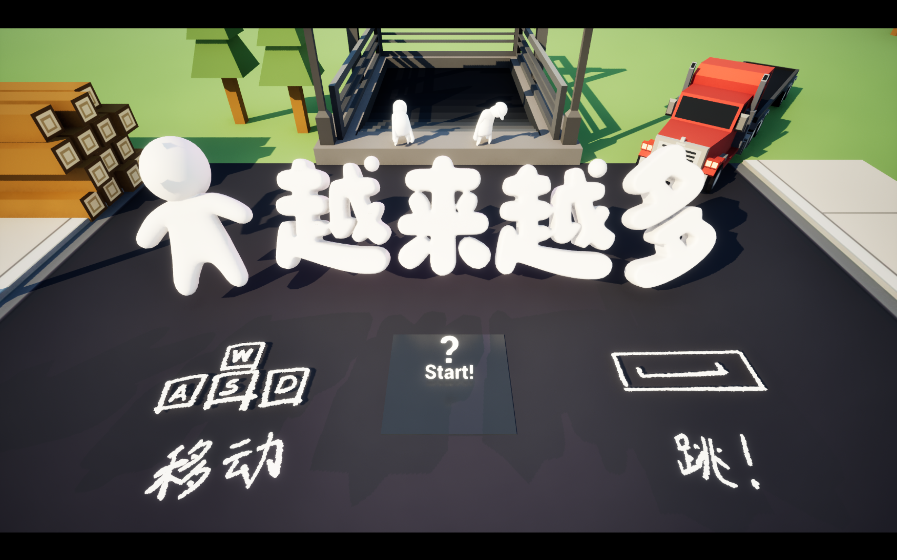
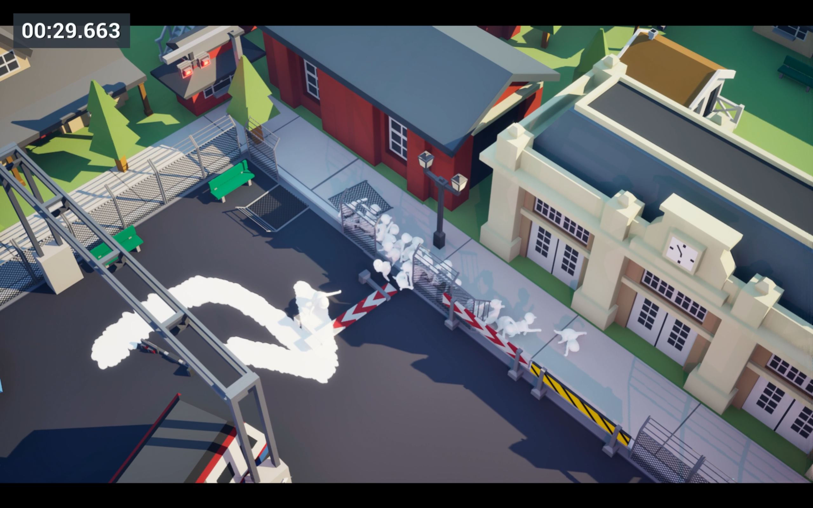

同步行动
每一次方向输入都会作用于所有人。同一个指令，会因为每个人所在的位置和面对的场景产生不同结果。

GLOBAL GAME JAM 2026 · WUHAN
PEOPLE MORE AND MORE
一场关于人群增长、统一控制与秩序变化的
群体物理闯关游戏。
THEME INTERPRETATION / 主题解读
游戏的灵感来自每次节假日在汉口站看到的巨大人流。随着发车时间临近，站内的人越来越多，也越来越拥挤。人数不断增长，让原本简单的管理逐渐变得混乱。
基于这些经历，《人越来越多》将“生长”理解为人群数量的持续增长。玩家控制的是一群不断增加、听从统一指令的人。人数的变化，也不断改变着行动与管理的难度。
IN-GAME PREVIEW
统一控制不断增长的人群，
在发车前穿过沿途的重重阻碍。

回家的列车即将发车。
玩家需要统一控制一群不断增长的人，带着他们跨过场景中的重重阻碍，在发车前赶往回家的列车。
由于所有人都会响应同一个指令，玩家需要借助场景让人群分开、调整数量，再让他们重新聚到一起。
将人群带入人数符合要求的区域，继续向前。人越多，行动越容易拥挤，原本简单的管理也越容易陷入混乱。
SIMPLE TO COMMAND. HARD TO CONTROL.
ONE INPUT. EVERY PASSENGER.
每一次方向输入都会作用于所有人。同一个指令，会因为每个人所在的位置和面对的场景产生不同结果。
前进过程中，人群不断增长。人数越多，占据的空间越大，统一行动时也越容易拥挤和混乱。
利用场景中的空间与阻碍，让统一行动的人群分开，调整各处的人数，再寻找重新汇合的机会。
将人群带入人数符合要求的区域，通过沿途的阻碍，最终赶上回家的列车。
GUIDE THE CROWD. CATCH THE TRAIN.